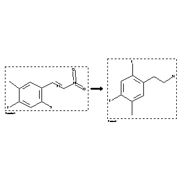

 |
| FA | RX(1); FLST(1); RX(2) |
Reaction (1 of 1)
| Reaction ID | 8712570 |
| Reactant BRN | 8685800 |
| Reactant | 2,4-difluoro-5-methyl-b-nitrostyrene |
| Product BRN | 8682906 |
| Product | 2-(2,4-difluoro-5-methyl-phenyl)-ethylamine |
| No. of Reaction Details | 2 |
Reaction Details (1 of 1)
| Reaction Classification | Preparation |
| Yield | 63 percent (BRN=8682906) |
| Reagent | LiAlH4 |
| Solvent | tetrahydrofuran; diethyl ether |
| Time | 4 hour(s) |
| Other Conditions | Heating |
| Citation Pointer | 6326791; Journal; Das, Biplab Kumar; Shibata, Norio; Takeuchi, Yoshio; JCSPCE; J.Chem.Soc.Perkin Trans.1; EN; 2; 2002; 197 - 206; |
Reaction Details (2 of 1)
| Reaction Classification | Preparation |
| Yield | 63 percent (BRN=8682906) |
| Reagent | LiAlH4 |
| Solvent | tetrahydrofuran; diethyl ether |
| Other Conditions | Heating |
| Citation Pointer | 6270237; Journal; Shibata, Norio; Das, Biplab Kumar; Takeuchi, Yoshio; JCPRB4; J.Chem.Soc.Perkin Trans.1; EN; 24; 2000; 4234 - 4236; |
Reference (1 of 2)
| Citation Number | 6270237 |
| Document Type | Journal |
| Authors | Shibata, Norio; Das, Biplab Kumar; Takeuchi, Yoshio |
| CODEN | JCPRB4 |
| Journal Title | J.Chem.Soc.Perkin Trans.1 |
| Language Code | EN |
| Number | 24 |
| Publication Year | 2000 |
| Page | 4234 - 4236 |
Reference (2 of 2)
| Citation Number | 6326791 |
| Document Type | Journal |
| Authors | Das, Biplab Kumar; Shibata, Norio; Takeuchi, Yoshio |
| CODEN | JCSPCE |
| Journal Title | J.Chem.Soc.Perkin Trans.1 |
| Language Code | EN |
| Number | 2 |
| Publication Year | 2002 |
| Page | 197 - 206 |